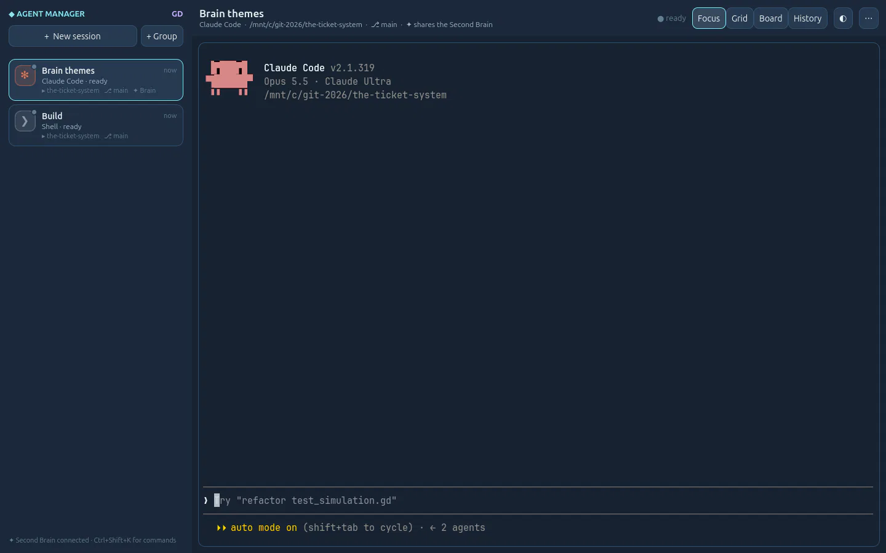

The lab opens
GD Project is a lab for one question: what happens when you build AI-native software with a game engine?
Why a game engine
AI software is alive. Agents change state while you watch, notes arrive on their own, a graph of what you know keeps moving. A web page or a classic desktop toolkit can show that, but a game engine is built for it: it redraws the screen many times a second and treats every pixel as yours. Godot gives us that, for Windows and Linux, from one interface, under a free licence.
So the lab's apps put the AI at the centre (agents that file, search and propose, voice for everything you can click, MCP so other AI tools can join in) and give it an interface rich enough to keep up.
What lives here today
- Second Brain GD, the memory: a second brain on your computer, where the Archivist agent files what you speak, drop or send, and every AI agent you use shares what you know.
- Agent Manager GD, the workshop: every coding agent in one control room: Claude Code, Codex and shells in real terminals that never die, and the Brain wired into every one.
Together they are the lab's first integration: each coding session gets its own key to the Brain, searches what you already know, proposes what it learned for your approval, and leaves a summary that briefs the next session. The context is no longer lost between agents.

How the lab works
Each app is a real tool, used every day, in its own repository with its devlog, its site, its how-to guides and its docs. This site brings them together. The recipe they share is simple: a Godot interface, a local Python engine beside it, AI agents, and the Second Brain as shared memory. Each new app starts from what the last one learned.
Everything is open source under the MIT licence.
Join
Suggest an app, an API worth plugging in, or an integration to try: open an issue. Improve one of the apps. Or build your own AI-native app with Godot and tell us about it: the lab is meant to grow.